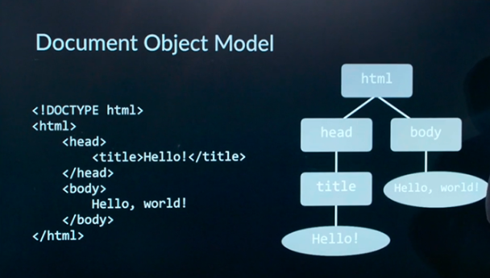

Git
Some useful git commands:
- clone link - save a copy of a repository from github via link.
- add - Add a file to staging area. Tells gits that you want to include updates to a particular file in the next commit.
- commit -m “message” - save changes to the local repository as a new commit object. Use the message to describe what changes occurred. Add -a to automatically add changed files.
- status - current status of the repository
- push - send the changes you committed locally to Github
- pull - get the changes you committed on the GitHub web interface, to local repository. If someone changed something on github, and you did something different locally trying to pull will result in merge conflict. Then open the file and choose the version you want, commit, and push.
- log - list of all commits made
- reset --hard commit - reset to certain commit hash
- reset --hard origin - reset to cloned version
- reflog - all changes
HTML
Example Code:
<!DOCTYPE html>
<html>
<head>
<title>My Webpage!</title>
</head>
<body>
Hello, World. Hello again! Hello a third time!
</body>
</html>
- First line indicates html 5.
- Html tag indicates html part of page
- Head indicates important metadata and primary information
- Body indicates the body of the page
- The title tag indicates title (shown on the tab in browser).
Headings can be created with the tags
h1 through
h6,
h1 being the largest and
h6 being the smallest.
Image Tag:
<image src="img.jpg">
<image src="img.jpg" height = “69” width = “420”>
You can also use a link as a source. Height and width attributes can be percentages too.
Table Tag:
- Table Row (tr)
- Table Header (th)
- Table Data (td)
You can represent HTML code as a tree chart. This is known as a document object model.
